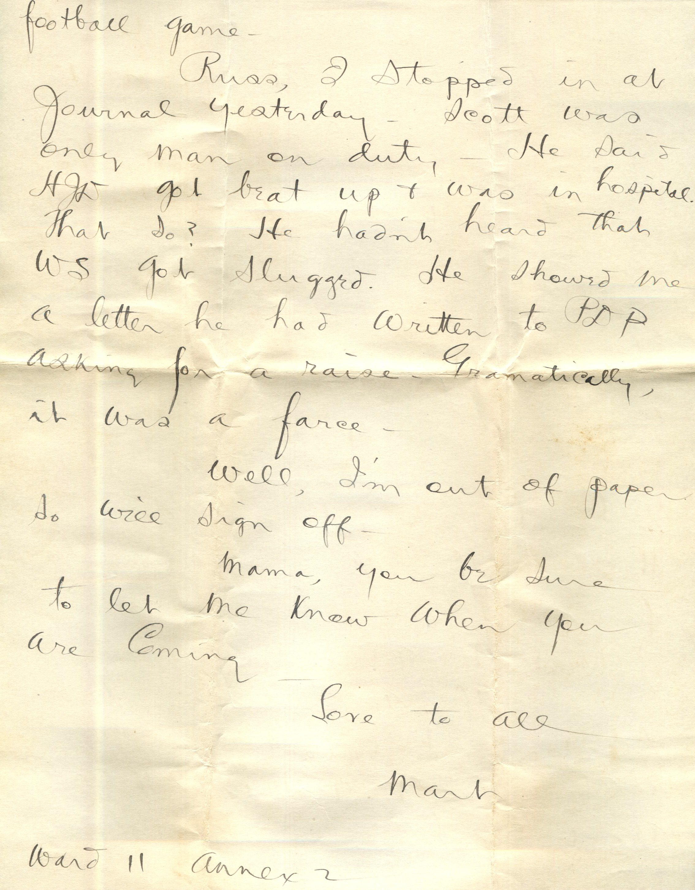
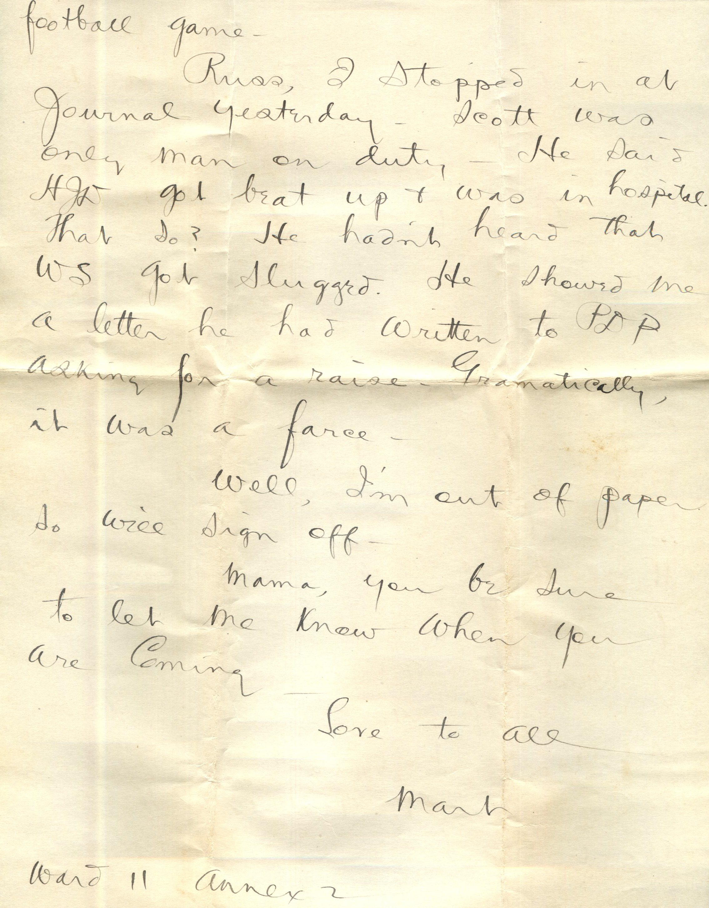

From: Martin Chandler, To: Elijah H. Chandler


 
From: Martin Chandler, To: Elijah H. Chandler Mailed From: Milwaukee on November 30, 1922
Mr. E.H. Chandler 2018 Newland Ave. Chicago, Ill.
Milwaukee Nov. 30 Dearest Everyone, Though I'd better write few lines right away as I just had a letter from Bess and Knox saying mama intended to visit me and I wanted to tell her that I've moved again. They transferred me to ward 11, annex 2 Wednesday evening. I didn't even get an examination at general hospital. Guess Mama is there now. Sure will be glad if she can come up. Hope some of you can come up. Hope some of you can come with her. I don't know what they're figuring on doing with me. I feel fine and dandy. I'm afraid my compensation claim will get a set back if the diagnosis made here stands. 'Course I wont care if the diagnosis is correct. Naturally, I'd rather be free from TB than have the pay. We had good dinner yesterday. I'll enclose the menu. I'm the afternoon a lot of us went to football game, Marquette vs. Ames, Marquette winning 6 to 0. We had passes. I had a notion to ask for pass to come down there for Thanksgiving but when they transferred me Wednesday evening, I didn't have a chance, as the doctor on this ward was gone Thanksgiving day. I like this ward better than any I've been in so far. Only two beds in each room and the rooms are nice. We ear at Annex 1, only a block away. Eat in general dining room. Mama when you come up, take the north shore line. Get off at 1st Ave and National Ave. Thats a regular hop on the North Shore line. Then you catch a National Ave. car, which would bring you right up in front of our place. Or else if you'll let me know what time you'll be here, and how you're coming, I'll meet you down town. I don't expect to be here very long. I don't think there's anything wrong with my thyroid gland, and if I haven't got I want to get out. The American Legion, Wisconsin Department, sent each man here a check for $1 yesterday. There's about 500 here. I squandered mine on a show after the football game. Russ, I stopped in at journal yesterday. Scott was only man on duty. He said HJD got beat up and was in hospital. That so? He hadn't heard that WS got slugged. He showed me a letter he had written to PDP asking for a raise. Grammatically, it was a farce. Well, I'm out of paper so will sign off. Mama, you be sure to let me know when you are coming. Love to all, Mart. Ward 11 Annex 2